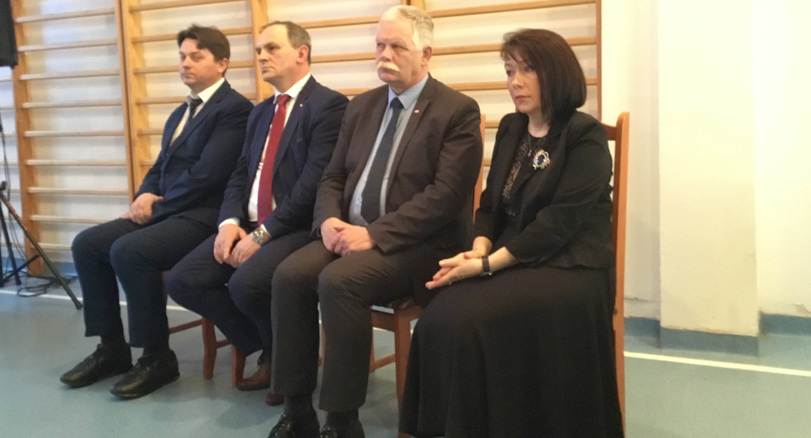

-
Zajęcia odbywają się regularnie

-
Wizyta Pana Wojewody
 -
Dzień Niepodległości

-
Dzień Przedsiębiorczości

-
Targi informatyczne

Nauka w szkole jest bezpłatna!

Jesteśmy szkołą niepubliczną, ale całkowicie bezpłatną, nie obowiązuje u nas rejonizacja, dlatego zapraszamy uczniów z całego Słupska i okolic. Nasi uczniowie kształcą się w małych zespołach klasowych pod czujnym okiem profesjonalnej i sympatycznej kadry pedagogicznej...
W dniu 15.03.2019 r. uczniowie naszej szkoły już po raz dziewiąty uczcili pamięć Żołnierzy Wyklętych. W tym roku uroczystość ta miała wyjątkowo podniosły charakter, albowiem wśród zaproszonych gości znalazł się wicewojewoda województwa pomorskiego pan Mariusz Łuczyk...

Dzisiaj w Zespole Szkół Społecznych Ponadgimnazjalnych w Słupsku odbył się uroczysty apel poświęcony stuleciu odzyskania przez Polskę Niepodległości. Była to niezwykle wzruszająca uroczystość, w organizację której zaangażowali się nie tylko uczniowie, ale również rodzice, dyrekcja...
11 - 12 IV: Rekolekcje wielkopostne
W dniach 11-12.04.2019r. w parafii pod wezwaniem Świętej Rodziny odbędą się rekolekcje wielkopostne. Uczniowie wraz z wychowawcami spotykają się przed wejściem do szkoły o godzinie 9:30. Po wspólnej modlitwie uczestniczymi w zajęciach szkolnych zgodnie z planem lekcji.
18 - 23 IV: Przerwa wielkanocna
Dyrekcja Zespołu Szkół Społecznych Ponadgimnazjalnych w Słupsku informuje, że wiosenna przerwa świąteczna trwa od 18.04.2019r. do 23.04.2019r.
Musicie od siebie wymagać, nawet gdyby inni od was nie wymagali.
Jan Paweł II
Kochać, to nie znaczy patrzeć na siebie, lecz patrzeć w tym samym kierunku.
Antoine de Saint-Exupéry
Nie wszystko przepadło, jeśli coś weźmie inny obrót niż pragniesz.
Tomasz à Kempis
Template by OS Templates


{kind=link}
{kind=link}
{kind=link}
{kind=link}